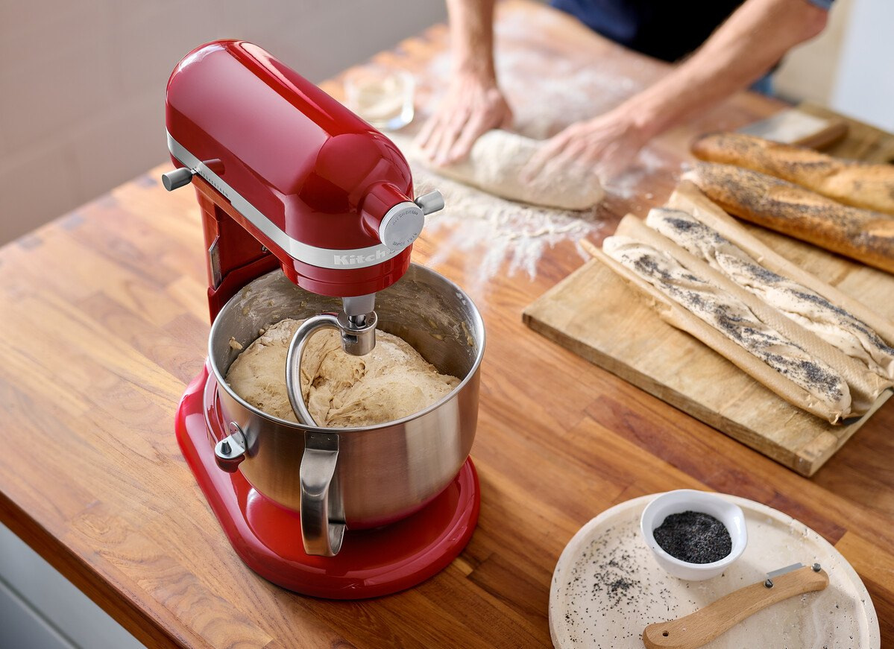
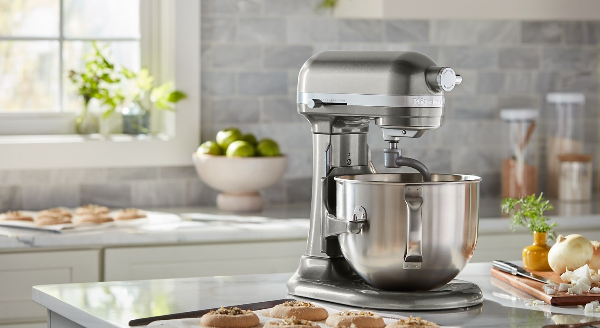
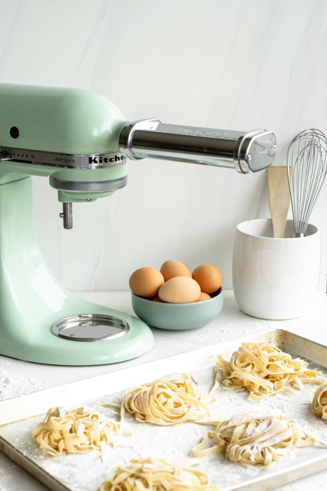
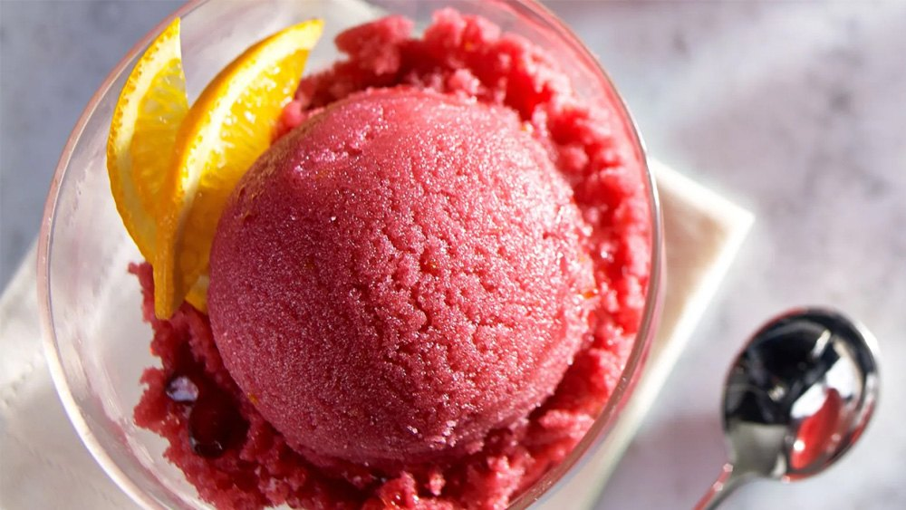

Dough hook
Bread, pizza and enriched dough. Develop strength at speed 2; rest or hand-finish if needed. Not for shortcrust pastry.
KitchenAid Artisan KSM195
Dough that stretches. Batter that stays tender. Pasta from scratch. Ice cream worth waiting for. One mixer, a few right tools, and knowing when to stop.

Your mixer, your starting point
Use the big bowl for the work.
Keep the small bowl for a second job.
The Australian KSM195 is a 300 W tilt-head mixer with 10 speeds. The current AU listing includes 4.7 L and 2.8 L stainless steel bowls, a wire whisk, flex-edge beater, pastry beater, dough hook and pouring shield. Older packaging may describe the main bowl as 4.8 L; check the items supplied with your unit.
Default for dough, pastry, batter, butter, mash and chicken. The recipe drawers name the bowl.
Useful for the listed small whipped-cream and egg-white recipes with the wire whisk. Do not assume flex-edge scraping or shield fit in this bowl.
AU heavy-mixture ceiling, including water—not a target or an automatic double-batch allowance. Stiffness and the manual still govern.
Our conservative maximum heavy run, including initial mixing, followed by a mixer rest. AU guidance says 5–6 minutes; stop sooner if it strains.
Model-manual correction: the KSM195-linked manual says not to use Stir/speed 1 to mix yeast dough. These recipes use speed 2 for initial yeast-dough mixing as well as hook kneading. Lock the lowered head and secure the bowl before starting; turn off and unplug before tool changes.
The supplied pastry beater handles cold butter, mash and shredded meat. A separate rigid flat beater is not assumed. The normal stainless bowl does not churn frozen desserts: an optional 5KSMICM freeze bowl replaces it. The AU 5KSMICM and KSMPRA listings support KSM195 compatibility; ownership is not assumed. Photos illustrate techniques and are not a claim to show your mixer’s exact model or colour.
KSM195-linked AU manual · tool chart pp. 5–6, cleaning p. 9 ↗
Before the first turn
Your hook develops gluten, flex-edge beater mixes and creams, pastry beater cuts in cold butter, and whisk traps air. The KSM195 supplies movement—not cooking, rolled sheets or refrigeration.
The recipe tells you where to start.
The mixture tells you when to stop.
These are modest home batches for the KSM195, not capacity tests. Check the manual supplied with your unit and stop for strain. Keep the 2 kg AU heavy-mixture ceiling distinct from bowl volume, and keep heavy mixtures at or below speed 2.
Bread, pizza and enriched dough. Develop strength at speed 2; rest or hand-finish if needed. Not for shortcrust pastry.
Cream butter and combine batter in the main bowl. The flexible edge helps scrape; it does not make overmixing harmless. Not our tool for chicken.
Cut cold butter into flour at speed 2. Mash cooked potatoes at 2. For shredded cooked meat, the model chart specifies speed 4.
Whipped cream and egg whites. Start low, then increase. Stop at the right peak—or continue deliberately to make butter.
Yeast dough: speed 2, never faster. KitchenAid AU’s heavy-mixture guidance calls for 5–6 minutes running followed by 20 minutes rest. This guide uses at most 5 minutes per heavy run, including initial mixing; follow stricter model instructions. Stop immediately for strain, stalling or walking—speed is not a fix.
| Speed | Job / tool | The useful cue |
|---|---|---|
| Stir | Non-yeast mixing / flex-edge | For non-yeast batters, add flour gently and fold in chocolate briefly. For yeast dough, use speed 2 instead—this model’s manual excludes Stir. |
| 2 | Knead / dough hook | Smooth, elastic dough—not necessarily a spotless bowl. Short runs, rests and load limits matter. |
| 4–6 | Cream / flex-edge | Paler, fluffier butter and sugar. Scrape while stopped. Reduce speed as soon as flour goes in. |
| 6–10 | Aerate / wire whisk | Soft, medium or stiff peaks as specified. Start low first. Grainy or clumpy is too far. |
| 2 / 4 | Pastry beater | Speed 2 for cutting cold butter and mashing. Speed 4 for shredded cooked meat, per the KSM195 manual. |
| Manual | Power-hub attachments | Each attachment has its own speeds. A pasta thickness dial is not a mixer speed control. |
Source-informed recipes and metric adaptations, not kitchen-tested by us. Yields, rise times and cooking times are estimates: use the visual cues and safe temperatures. No automatic batch scaling is provided: the KSM195’s heavy-load limit is a ceiling, not permission to multiply stiff dough. Eggs are weighed without shells; ovens show conventional and fan settings. Standard tools still need ordinary kitchen equipment such as a stove, oven, refrigerator or saucepan.
Choose your next project
25 recipes · choose a card for ingredients and method
01 / Dough & pastry · 5 recipes
Bread needs gluten; pastry needs tenderness. The same mixer can make both, but not with the same tool or the same finish.
A wet dough can cling to the bowl and still be ready.
An oil-rich tray pizza for a domestic oven—not the lean, high-heat Neapolitan dough from Ninety Seconds.
Makes one 30–35 cm pizza, 3–4 portions
Allow time
1–2 hours, including rise and baking
Bowl: 4.7 L stainless steel bowl
Equipment: Mixer, flex-edge beater, dough hook, scales, covered bowl and pizza tray
The ingredients
The method
The endpoint: Golden crust with a crisp, cooked base.
If it goes wrong
no rise: check yeast age, water warmth and room temperature; tight dough: rest before stretching; soggy centre: reduce wet toppings and preheat oven fully. Do not put unsupported raw dough directly on oven bars.
Approx. 510 g dough. Source's relatively oil-rich formula retained. Research-based small-batch adaptation; not kitchen-tested. Do not taste raw dough or batter. Stop and unplug before tool changes; stop before scraping. KSM195 manual p. 5: mix and knead yeast dough at speed 2; do not use Stir/speed 1. Initial flex-edge mixing counts toward the heavy-run limit.
Start with the lower water quantity and add only enough to leave the dough lightly tacky.
Makes one approximately 21 × 11 × 7 cm loaf, 10–12 slices
Allow time
3–5½ hours, including two rises and full cooling; allow an extra 20-minute mixer rest if needed
Bowl: 4.7 L stainless steel bowl
Equipment: Mixer, flex-edge beater, dough hook, scales and approximately 21 × 11 × 7 cm loaf tin
The ingredients
The method
The endpoint: Golden loaf with firm sides and a hollow-sounding base; cool fully before slicing.
If it goes wrong
dense loaf: allow fuller rise, do not add excess flour; collapsed top: reduce final proof; gummy slices: bake longer and cool fully.
Approximately 850–900 g dough. Adapted from the official white tin-loaf recipe; optional milk powder helps a softer sandwich crumb. Research-based small-batch adaptation; not kitchen-tested. Do not taste raw dough or batter. Stop and unplug before tool changes; stop before scraping. KSM195 manual p. 5: mix and knead yeast dough at speed 2; do not use Stir/speed 1. Initial flex-edge mixing counts toward the heavy-run limit.
Oiled hands preserve this dough’s softness better than extra flour when stretching it into the tray.
Makes one approximately 20 × 30 cm tray, 6 portions
Allow time
2½–3¼ hours, including rest, two rises and baking
Bowl: 4.7 L stainless steel bowl
Equipment: Mixer, flex-edge beater, dough hook, scales and approximately 20 × 30 cm metal tray
The ingredients
The method
The endpoint: Golden top and cooked, golden underside; airy dough before baking.
If it goes wrong
sticky is expected; use oiled hands, not handfuls of extra flour. Tight stretching: rest. Pale wet base: use a metal tray and bake a little longer; shade exposed garlic if browning too quickly.
Approximately 710 g dough, excluding topping. Editorial simpler, wetter, unfilled adaptation of the official herb-and-garlic recipe (Parmesan filling omitted). Research-based small-batch adaptation; not kitchen-tested. Do not taste raw dough or batter. Stop and unplug before tool changes; stop before scraping. KSM195 manual p. 5: mix and knead yeast dough at speed 2; do not use Stir/speed 1. Initial flex-edge mixing counts toward the heavy-run limit.
Cold overnight dough is easier to shape, while short speed-2 runs protect the mixer during enrichment.
Makes one small approximately 21 × 11 cm loaf, 8 slices
Allow time
13–17 hours or longer, including ≥8 hours chilling, proofing and cooling; 8–15 minutes active hook mixing in short runs plus 20-minute machine rests
Bowl: 4.7 L stainless steel bowl
Equipment: Mixer, flex-edge beater, dough hook, scales and approximately 21 × 11 cm loaf tin
The ingredients
The method
The endpoint: Satiny dough stretches into a thin translucent membrane; finished loaf is deeply golden with a set centre.
If it goes wrong
greasy dough: butter/dough too warm; chill briefly. Dough tears: use rest and further gentle development, not higher speed. Slow final proof: wait for puffiness rather than baking to the clock.
Approximately 577 g dough. Half-size source adaptation with shell-free egg weights. Research-based small-batch adaptation; not kitchen-tested. Do not taste raw dough or batter. Stop and unplug before tool changes; stop before scraping. KSM195 manual p. 5: mix and knead yeast dough at speed 2; do not use Stir/speed 1. Initial flex-edge mixing counts toward the heavy-run limit.
Visible pea-size butter pieces and minimal water help keep this pastry tender.
Makes pastry for one 23 cm single-crust tart, about 390–410 g
Allow time
2–2½ hours, including ≥60 minutes chilling, 20–30 minutes lined-tin chilling and blind baking
Bowl: 4.7 L stainless steel bowl
Equipment: Mixer, pastry beater, scales, rolling pin, wrap, 23 cm tart tin, baking paper and baking weights
The ingredients
The method
The endpoint: Coarse crumbs before water; a squeezed handful holds together; baked shell has a dry golden base.
If it goes wrong
crumbly: add water 5 ml at a time; sticky/greasy: chill, not more vigorous mixing; shrinkage: avoid stretching and allow chilling. Never use dough hook for this pastry.
Editorial classic 2:1 flour:butter shortcrust; source supports flat-beater technique, not this exact formula. Research-based small-batch adaptation; not kitchen-tested. Do not taste raw dough or batter. Stop and unplug before tool changes; stop before scraping. KSM195 adaptation: use the supplied pastry beater, supported by its AU manual, rather than requiring a separate flat beater.
02 / Batter & baking · 6 recipes
Creaming butter is deliberate aeration. Once flour arrives, gentleness takes over. Meringue is the other end of the spectrum: the whisk builds the structure.
Cream before flour. Brief mixing after flour.

Weigh the beaten egg and yolk separately for a practical small batch without guessing half an egg.
Makes approximately 12 cookies at 40 g dough each
Allow time
35–65 minutes, including optional 20–30 minutes chilling and tray cooling
Bowl: 4.7 L stainless steel bowl
Equipment: Mixer, flex-edge beater, scales, lined baking trays and cooling rack
The ingredients
The method
The endpoint: Golden edges and soft but set centres, not liquid.
If it goes wrong
excess spread: chill dough, use cool trays and weigh flour; tough: shorten flour mixing; crisp not chewy: remove earlier at set edges, allowing carry-over cooking.
Approximately 516 g dough. Half-size adaptation; yield recalculated from actual dough mass, not the source's inconsistent cookie count. Research-based small-batch adaptation; not kitchen-tested. Do not taste raw dough or batter. Stop and unplug before tool changes; stop before scraping.
Room-temperature butter, eggs and milk help this small cake batter emulsify evenly.
Makes one 20 cm round cake, 8 slices
Allow time
1½–2 hours, including baking and full cooling
Bowl: 4.7 L stainless steel bowl
Equipment: Mixer, flex-edge beater, scales, 20 cm round tin and cooling rack
The ingredients
The method
The endpoint: Centre springs back and a skewer has no wet batter.
If it goes wrong
curdling: match egg/milk/butter temperatures; a little measured flour from the recipe can help. Dense cake: cream thoroughly but do not overmix flour. Brown top/wet middle: tent loosely and continue baking, checking oven temperature.
Approximately 775 g batter. Small-batch editorial adaptation: source's combined baking-powder/bicarb text is malformed and includes bicarb without an obvious acidic ingredient; this draft deliberately uses 4 g baking powder only rather than silently reproducing that ambiguity. The changed formula must be kitchen-validated before describing as tested. Research-based small-batch adaptation; not kitchen-tested. Do not taste raw dough or batter. Stop and unplug before tool changes; stop before scraping.
Small lumps are welcome: stop mixing before the batter becomes completely smooth.
Makes approximately 8 pancakes using 60 ml batter each, 3–4 portions
Allow time
30–45 minutes, including 10–20 minutes batter rest
Bowl: 4.7 L stainless steel bowl
Equipment: Mixer, flex-edge beater, measuring jug, frying pan and stove
The ingredients
The method
The endpoint: Bubbles and set edges before flipping; golden underside and cooked centre afterward.
If it goes wrong
rubbery: overmixed or pressed after flipping; burnt outside/raw centre: lower heat; too thick after resting: stir in 5–10 ml extra milk by hand.
Editorial small-batch formulation based on official ingredient list and mixer method; source does not provide quantities. Research-based small-batch adaptation; not kitchen-tested. Do not taste raw dough or batter. Stop and unplug before tool changes; stop before scraping.
One thin, unsweetened batter for lemon and sugar, chocolate, or savoury fillings. No baking powder.
Makes Around 12 thin crêpes, depending on pan size and batter per crêpe
Allow time
About 10 minutes preparation, 30 minutes refrigerated resting and 15–20 minutes cooking
Bowl: 4.7 L stainless steel bowl
Equipment: KSM195, supplied flex-edge beater, jug, sieve, ladle, approximately 20 cm non-stick frying pan and thin spatula
The ingredients
The method
The endpoint: Thin, pourable batter; cooked crêpes are flexible and lightly freckled, not thick or fluffy.
If it goes wrong
Rubbery: batter was overworked or crêpes overcooked. Thick: use less batter or thin with a little water. Sticking: let the pan warm properly, grease lightly and wait until the first side sets before flipping. The first crêpe is a useful test of pan heat and batter quantity.
Source-informed KSM195 adaptation, not kitchen-tested by us. Ingredient formula follows Good Food’s classic crêpes, including the 100 ml water specified in its method. Flex-edge mixing speeds/times, refrigerated rest and pan-volume guidance are editorial adaptations of its hand-whisk method. Use plain flour, not self-raising flour. No sugar is needed in the base, so it works for sweet and savoury fillings. Contains wheat, milk and eggs.
Hold some cream back so the buttercream stays spreadable rather than runny.
Makes approximately 540 g, enough for 12 generously iced cupcakes or a modest coating on one 20 cm cake
Allow time
15–20 minutes; cake must already be completely cool
Bowl: 4.7 L stainless steel bowl
Equipment: Mixer, flex-edge beater, scales, sieve and spatula
The ingredients
The method
The endpoint: Light, smooth, spreadable frosting without large air bubbles.
If it goes wrong
gritty: sift and use pure icing sugar; too loose: chill briefly, then beat at low speed; too firm: add cream 5 ml at a time; bubbles: final slow paddle mixing. Contains dairy: refrigerate covered and soften gently before rebeating.
Source uses vanilla beans and 3 tablespoons cream; metric draft deliberately uses extract and a restrained 40 ml cream, adding to texture rather than converting ambiguous tablespoon conventions. Research-based small-batch adaptation; not kitchen-tested. Do not taste raw dough or batter. Stop and unplug before tool changes; stop before scraping.
Dissolve the sugar before piping for glossy meringues that dry without weeping.
Makes approximately 16 small meringues
Allow time
2¾–4 hours, including 75–100 minutes baking and 1–2 hours oven cooling
Bowl: 2.8 L stainless steel bowl with wire whisk; 4.7 L bowl also available
Equipment: Mixer, wire whisk, grease-free bowl, scales and lined trays
The ingredients
The method
The endpoint: Stiff glossy peaks with dissolved sugar; baked meringues are dry and release from paper.
If it goes wrong
whites will not whip: any yolk/fat contamination means restart with clean equipment; gritty/weeping: add sugar more slowly and dissolve fully; cracks: lower oven temperature and cool slowly; sticky after cooling: humidity or insufficient drying, dry further in low oven.
Editorial all-caster-sugar adaptation at 2:1 sugar:white ratio; source uses mixed brown/caster sugar and a shorter, hotter bake. Research-based small-batch adaptation; not kitchen-tested. Do not taste raw dough or batter. Stop and unplug before tool changes; stop before scraping.
03 / Fresh pasta · 3 recipes
The mixer brings dough together. Resting makes it workable; rolling makes it thin. Cut tagliatelle by hand, use the cutter for fettuccine, or shape semolina dough on the bench.
KSM195 + optional KSMPRA. Mixer speed ≠ thickness dial.

For the documented KSMPRA family: roller speed 2, fettuccine cutter 5, spaghetti cutter 7. Start thickness dial at 1 and progress gradually; dial 4–5 suits many sheet recipes. Follow your own attachment manual. A pasta press is a different tool with different dough and speeds.
A weighed egg-to-flour ratio makes consistent sheets and wider hand-cut tagliatelle.
Makes about 450–465 g dough; 3 generous or 4 moderate main-course portions; sheets or ribbons as required
Allow time
1–1½ hours, including 30-minute dough rest, rolling and cooking
Bowl: 4.7 L stainless steel bowl
Equipment: mixer bowl, dough hook; compatible KitchenAid pasta roller; scales, wrap/container, bench scraper, sharp knife and board, dusted tray/rack, large saucepan. Fettuccine cutter is optional, but produces 6.5 mm fettuccine, not an attachment expressly named tagliatelle.
The ingredients
The method
The endpoint: Firm pliable dough, smooth flexible sheets; cooked ribbons have slight resistance but no raw floury core.
If it goes wrong
cracks or tearing: hydrate sparingly and rest, avoid jumping thin settings; shrinking: cover and rest another 10 minutes; sticking: dust lightly and let surface dry briefly; cutters fail to separate: sheets too wet or too thick, allow touch-drying. Do not keep adding flour until dough is brittle. Refrigerate promptly or freeze dusted nests individually before bagging.
editorial home-batch formulation using the classic approximately 100 g flour : 50 g whole egg ratio, with official KitchenAid mixing/rolling technique. Not an exact reproduction of its manual's larger flour-measured recipe. Research-based draft; not kitchen-tested. Elapsed times and yields are estimates; use texture endpoints. Keep perishables at 4°C or below and cumulative room-temperature handling under 2 hours, or 1 hour above 32°C. KSM195 adaptation: stiff pasta crumbs are initially combined by hand, then briefly worked with the supplied dough hook; no separate flat beater is assumed.
Finely remilled durum semolina hydrates into firm, egg-free dough suited especially to hand shapes.
Makes about 450 g dough, 3–4 portions. Best suited to hand shapes; roller ribbons are an option, not a promise that every coarse semolina flour will roll well
Allow time
1–1½ hours, including 30–45 minutes dough rest and hand shaping
Bowl: 4.7 L stainless steel bowl
Equipment: bowl, dough hook, scraper, board; optional roller and knife; pot/tray.
The ingredients
The method
The endpoint: Firm dough becomes supple after resting; cooked shapes have no hard or raw centre.
If it goes wrong
dough feels relatively firm at first and becomes supple with rest. Sandy cracking: use finer flour, longer covered rest, or knead with wet hands; do not pour in large extra quantities of water. Sticky: tiny dusting of semolina. If it resists rolling, use hand shapes or rest longer rather than forcing it. Egg-free is still wheat-containing and raw flour is still unsafe to taste.
¾ of pasta specialist Gabriella Simonian's 400 g flour / 200 ml water recipe; mixer-assisted initial mixing is editorial and follows KitchenAid's conservative pasta sequence rather than the source's hand kneading. Research-based draft; not kitchen-tested. Elapsed times and yields are estimates; use texture endpoints. Keep perishables at 4°C or below and cumulative room-temperature handling under 2 hours, or 1 hour above 32°C. KSM195 adaptation: stiff pasta crumbs are initially combined by hand, then briefly worked with the supplied dough hook; no separate flat beater is assumed.
Drained ricotta and air-free seams matter more than a specialist ravioli-making attachment.
Makes roughly 30–40 ravioli at about 5 cm each; 3–4 mains. Count varies with sheet trimming and filling size
Allow time
1½–2 hours from raw dough, including dough rest, rolling, filling and cooking
Bowl: 4.7 L stainless steel bowl
Equipment: mixer/pasta roller; bowl, teaspoon or piping bag, pastry brush, pasta wheel/knife, dusted tray; no ravioli-making attachment required.
The ingredients
The method
The endpoint: Seams are firmly sealed with no trapped air; cooked edges are tender and the filling hot.
If it goes wrong
bursts: trapped air, excess filling or vigorous boil; leaking seams: flour on seal, dried sheets or over-wetting; watery centre: insufficiently drained ricotta. Keep filling cold while rolling, do not leave assembled trays out all afternoon. A raw meat filling would need a separate validated safe-cooking method and is not covered here.
one egg-pasta batch from the egg pasta recipe; ricotta filling based on KitchenAid's 200 g ricotta / 25 g Parmesan filling, scaled 1½ times. Beetroot dough is deliberately not used. Research-based draft; not kitchen-tested. Elapsed times and yields are estimates; use texture endpoints. Keep perishables at 4°C or below and cumulative room-temperature handling under 2 hours, or 1 hour above 32°C.
04 / Ice cream, gelato & sorbet · 7 recipes
The first recipe is a cold, no-cook base for soft-serve straight after churning. There is also a no-churn option, plus richer bases and sorbets. Sugar and fat are part of the structure, not just the flavour.
Start the dasher on Stir before pouring in cold base.

Start simple: the first recipe uses the fully frozen attachment bowl and is ready to eat as soft-serve after churning. The condensed-milk no-churn recipe uses only the whisk and freezer. Bowl preparation below applies only to the six churned recipes.
Freeze bowl fully. Follow the exact manual if longer.
Chill the base. Room temperature is not cold enough.
Churn on Stir to soft-serve texture, not to a fixed timer.
Freeze for firm scoops. For immediate soft-serve, skip hardening and eat after churning.
1.9 L finished is not 1.9 L liquid. KitchenAid’s guidance limits starting base to 1.4 L; these recipes are smaller. The AU bowl page says 16 hours minimum freeze time; this guide allows 24 hours for planning. Measure cooled base and follow your exact bowl manual. The optional AU 5KSMICM explicitly fits KSM195; it replaces your normal bowl and uses its own dasher and drive. It is not a universal hub accessory. Fully refreeze between batches.
Four ingredients, no eggs, no cooking. Churn a cold base and eat it straight from the bowl as soft-serve.
Makes Approximately 800 ml–1 L soft ice cream, about 6 small servings; aeration varies
Allow time
About 5 minutes mixing + 20–30 minutes churning, once the bowl is fully frozen; no freezer-hardening wait for soft-serve
Bowl: Optional 5KSMICM freeze bowl, completely frozen before use
Equipment: KSM195, compatible pre-frozen 5KSMICM bowl, its dasher and drive, measuring jug and spoon; no wire whisk for churning
The ingredients
The method
The endpoint: Thick, spoonable soft-serve with ridges left by the dasher—not firm supermarket-style scoops.
If it goes wrong
Still liquid: the bowl was not completely frozen, the base was too warm, the batch too large or assembly incorrect. Stop and refrigerate the base; fully refreeze the bowl before retrying. Butter flecks or a greasy texture: overchurning; stop as soon as soft-serve is ready. Do not reduce the sugar casually—it affects freezing, not only sweetness.
Source-informed adaptation, not kitchen-tested by us. Joy of Baking’s cream/milk/sugar formula is scaled to five-sixths (400 ml / 200 ml / 125 g); vanilla is rounded to 5 ml and optional salt/milk powder omitted for a four-ingredient starter. KitchenAid-specific assembly, churning and immediate soft-serve service are added. No overnight base chilling or post-churn hardening is needed if the ingredients start and remain refrigerator-cold; the bowl must already be fully frozen. Contains milk. This is distinct from the whisk-and-freeze condensed-milk recipe.
Three ingredients. Whisk, freeze, scoop. No eggs, cooking or special attachment.
Makes Approximately 1.2–1.5 L, about 8 servings; yield depends on aeration
Allow time
About 5–10 minutes preparation, then at least 6 hours freezing; overnight is easiest
Bowl: 4.7 L stainless steel bowl with wire whisk
Equipment: KSM195, supplied wire whisk, refrigerator, spatula and covered freezer-safe container; no ice-cream attachment
The ingredients
The method
The endpoint: Thick, airy soft peaks before freezing; firm through the centre after freezing.
If it goes wrong
If it will not whip, check that the cream is cold and full-fat whipping cream, not light or cooking cream. If grainy, stop: it is overwhipped. If hard straight from the freezer, allow a few minutes to soften. Condensed milk supplies the sugar as well as milk solids; evaporated milk is not a substitute.
Source-informed no-churn adaptation, not kitchen-tested by us. Based on Waitrose’s 600 ml whipping cream / 397 g condensed milk / 2 tsp vanilla formula; uses an Australian 395 g can, 10 ml vanilla and omits its optional pinch of salt. Stand-mixer speed progression and six-hour/overnight freeze planning are editorial adaptations. Contains dairy. This is no-churn ice cream, not a recipe for the 5KSMICM bowl: skip the frozen-bowl preparation and do not churn this whipped mixture.
A thermometer takes the guesswork out of safely thickening this egg custard.
Makes roughly 0.75 L cold base, 0.85–1.0 L finished, 6–8 small servings
Allow time
7–10 hours after bowl is frozen, including ≥4 hours base chilling and 2–4 hours hardening; freeze bowl ≥24 hours ahead
Bowl: Optional 5KSMICM freeze bowl replaces the normal mixing bowl for churning
Equipment: Compatible mixer and pre-frozen ice-cream bowl, correct dasher and drive, scales, measuring jug, silicone spatula and covered shallow freezer container; saucepan, whisk, fine sieve, thermometer and ice-water bath
The ingredients
The method
The endpoint: Custard reaches 77–82°C and coats a spatula with a clear drawn line; churned ice cream forms thick soft-serve ridges.
If it goes wrong
scrambled flecks mean overheating; immediate fine straining may help small flecks but a severely curdled/scorched batch will not become smooth ice cream. Do not use a spoon-coating cue as a replacement for thermometer safety. Icy: insufficiently frozen bowl/warm base or reduced sugar/fat; butter flecks: overchurning very fatty cream. Use pasteurized dairy and preferably yolks. If the base stays liquid after 20–30 minutes, stop and refrigerate it; check bowl freeze, base temperature, assembly and volume before retrying with a fully refrozen bowl. Never solve a stalled dasher with more speed or hot water.
80% of David Lebovitz's public vanilla recipe, using extract rather than a full vanilla-bean infusion; cooling/safety and KitchenAid steps added. Research-based draft; not kitchen-tested. Elapsed times and yields are estimates; use texture endpoints. Keep perishables at 4°C or below and cumulative room-temperature handling under 2 hours, or 1 hour above 32°C. Churn prepared bases within 24 hours; enjoy within 1–2 weeks for best texture, not a validated shelf-life promise. Exact attachment generation and country determine compatibility; this bowl is not universal.
Cooked starch and melted chocolate give this egg-free ice cream its dense texture.
Makes roughly 0.75–0.85 L base, about 0.7–0.9 L dense finished ice cream, 6–8 small servings; the source has low overrun
Allow time
8–10 hours after bowl is frozen, including ≥4 hours chilling and 3–4 hours hardening; freeze bowl ≥24 hours ahead
Bowl: Optional 5KSMICM freeze bowl replaces the normal mixing bowl for churning
Equipment: Compatible mixer and pre-frozen ice-cream bowl, correct dasher and drive, scales, measuring jug, silicone spatula and covered shallow freezer container; saucepan, whisk, fine sieve, thermometer and ice-water bath
The ingredients
The method
The endpoint: Base boils and thickens, then becomes glossy as chocolate melts; churn to dense soft-serve.
If it goes wrong
lumps: slurry was incompletely dispersed; sieve while still warm. Scorching: insufficient scraping or excessive heat; burned flavour cannot be strained away. Very hard after overnight freezing is expected with this alcohol-free source adaptation; temper 10–20 minutes, longer if needed, rather than cut sugar radically. Use pasteurized milk; check chocolate allergens. Cornstarch is not instant ClearJel and must be cooked. If the base stays liquid after 20–30 minutes, stop and refrigerate it; check bowl freeze, base temperature, assembly and volume before retrying with a fully refrozen bowl. Never solve a stalled dasher with more speed or hot water.
approximately ¾ of King Arthur's Chocolate Decadence recipe, rounded to practical grams; alcohol omitted, so temper before scooping. This is milk/chocolate-based ice cream, not dairy-free, and not a no-churn recipe. Research-based draft; not kitchen-tested. Elapsed times and yields are estimates; use texture endpoints. Keep perishables at 4°C or below and cumulative room-temperature handling under 2 hours, or 1 hour above 32°C. Churn prepared bases within 24 hours; enjoy within 1–2 weeks for best texture, not a validated shelf-life promise. Exact attachment generation and country determine compatibility; this bowl is not universal.
Measure the berry purée rather than the whole fruit to keep the sugar ratio consistent.
Makes about 0.68–0.75 L base, 0.75–0.9 L finished, 6 small servings
Allow time
5–8 hours after bowl is frozen, including 2–3 hours chilling and 2–4 hours hardening; freeze bowl ≥24 hours ahead
Bowl: Optional 5KSMICM freeze bowl replaces the normal mixing bowl for churning
Equipment: Compatible mixer and pre-frozen ice-cream bowl, correct dasher and drive, scales, measuring jug, silicone spatula and covered shallow freezer container; blender and sieve
The ingredients
The method
The endpoint: Sugar grains dissolve completely; churned sorbet is thick and spoonable.
If it goes wrong
cold base tastes slightly sweeter/sharper than the desired frozen result. No crunchy sugar grains should remain. Hard/icy: underripe fruit or too little sugar; syrupy/slushy: excess sugar or insufficient freezing. Sugar is structural here, not just optional sweetness. Do not add lots of water to ease blending. Wash fruit; freezing raw fruit does not sanitize it. No raw-shell-egg 'float test' is recommended. If the base stays liquid after 20–30 minutes, stop and refrigerate it; check bowl freeze, base temperature, assembly and volume before retrying with a fully refrozen bowl. Never solve a stalled dasher with more speed or hot water.
scaled from Max Falkowitz's Serious Eats ratio one quarter cup sugar per cup berry purée, converted to a practical metric starting formula. Measure purée volume; fruit ripeness can change texture. Research-based draft; not kitchen-tested. Elapsed times and yields are estimates; use texture endpoints. Keep perishables at 4°C or below and cumulative room-temperature handling under 2 hours, or 1 hour above 32°C. Churn prepared bases within 24 hours; enjoy within 1–2 weeks for best texture, not a validated shelf-life promise. Exact attachment generation and country determine compatibility; this bowl is not universal.
The split water addition preserves the published citrus formula without relying on a fixed lemon count.
Makes roughly 0.7–0.75 L base, 0.75–0.9 L finished, 6 small servings
Allow time
5–8 hours after bowl is frozen, including ≥2 hours chilling and 2–4 hours hardening; freeze bowl ≥24 hours ahead
Bowl: Optional 5KSMICM freeze bowl replaces the normal mixing bowl for churning
Equipment: Compatible mixer and pre-frozen ice-cream bowl, correct dasher and drive, scales, measuring jug, silicone spatula and covered shallow freezer container; blender and sieve
The ingredients
The method
The endpoint: Clear dissolved syrup, then a thick spoonable slush after churning.
If it goes wrong
clear dissolved syrup, strongly tart base, thick spoonable slush after churn; lemon lacks berry pulp and naturally has a lighter/icier texture. Bitter: white pith or excessive peel; hard: under-sugared or very cold storage; slushy: inaccurate water/sugar or warm bowl. Do not use the berry sugar ratio indiscriminately for tart citrus. Temper a few minutes before serving. Rinse citrus before zesting. If the base stays liquid after 20–30 minutes, stop and refrigerate it; check bowl freeze, base temperature, assembly and volume before retrying with a fully refrozen bowl. Never solve a stalled dasher with more speed or hot water.
BBC Food's public churned formula, with juice volume rather than a fixed count of variable-sized lemons. Research-based draft; not kitchen-tested. Elapsed times and yields are estimates; use texture endpoints. Keep perishables at 4°C or below and cumulative room-temperature handling under 2 hours, or 1 hour above 32°C. Churn prepared bases within 24 hours; enjoy within 1–2 weeks for best texture, not a validated shelf-life promise. Exact attachment generation and country determine compatibility; this bowl is not universal.
Sweetened pistachio cream containing about 40–50% nuts is essential; pure nut paste is not interchangeable.
Makes about 0.65–0.75 L base, 0.7–0.9 L finished, 6 small servings
Allow time
7–10 hours after bowl is frozen, including ≥4 hours chilling and 2–4 hours hardening; freeze bowl ≥24 hours ahead
Bowl: Optional 5KSMICM freeze bowl replaces the normal mixing bowl for churning
Equipment: Compatible mixer and pre-frozen ice-cream bowl, correct dasher and drive, scales, measuring jug, silicone spatula and covered shallow freezer container; saucepan, whisk, fine sieve, thermometer and ice-water bath
The ingredients
The method
The endpoint: Smooth evenly coloured base, usually muted green or beige; thick soft-serve with churn tracks.
If it goes wrong
gritty: nut product not finely ground or cream not dispersed; use smooth purchased cream rather than chopped nuts. Hard/bland: wrong product, especially substituting pure unsweetened paste without rebalancing sugar/fat. Sweetened spreads vary significantly; recipe needs practical testing with the selected brand. No validated one-for-one conversion to pure paste is supplied. Nut + milk allergens; inspect spread label for soy/other nuts. Natural colour is usually muted green/beige, not fluorescent green. Keep milk base cold. If the base stays liquid after 20–30 minutes, stop and refrigerate it; check bowl freeze, base temperature, assembly and volume before retrying with a fully refrozen bowl. Never solve a stalled dasher with more speed or hot water.
David Lebovitz's public Sicilian-style starch recipe at its original conservative size. Use the specified sweetened pistachio cream, not 100% nut paste. 'Gelato-style' acknowledges a domestic KitchenAid churn is not commercial gelato equipment. Research-based draft; not kitchen-tested. Elapsed times and yields are estimates; use texture endpoints. Keep perishables at 4°C or below and cumulative room-temperature handling under 2 hours, or 1 hour above 32°C. Churn prepared bases within 24 hours; enjoy within 1–2 weeks for best texture, not a validated shelf-life promise. Exact attachment generation and country determine compatibility; this bowl is not universal. Let briefly temper before serving for a softer gelato-style texture.
05 / Everyday bowl jobs · 4 recipes
Cream, butter, mash and cooked chicken all use the familiar bowl tools. The stove still cooks; the mixer only supplies the movement.
Thirty seconds can be enough. Watch the texture.
Cold cream and chilled tools help you reach soft peaks before the cream starts separating.
Makes About 450–500 ml whipped cream; 4–6 servings
Allow time
15–20 minutes, including 10 minutes chilling tools
Bowl: 2.8 L stainless steel bowl with wire whisk; 4.7 L bowl also available
Equipment: Mixer, wire whisk, bowl, refrigerator and spatula
The ingredients
The method
The endpoint: Cream holds soft drooping peaks or medium peaks without graininess.
If it goes wrong
If the cream stays liquid, check that it is whipping cream and properly cold. Stop as soon as peaks hold: grainy cream is overwhipped and continued whipping separates butter and liquid.
Editorial metric small-batch adaptation, not kitchen-tested. Stop and unplug before fitting tools; stop before scraping.
Washing away the trapped sweet-cream liquid gives the butter a cleaner texture and flavour.
Makes Estimated 180–220 g butter, depending on cream fat and draining
Allow time
20–30 minutes, including whipping, draining and washing
Bowl: 4.7 L stainless steel bowl
Equipment: Mixer, wire whisk, flex-edge beater, bowl, sieve or cheesecloth, spatula and ice-cold water
The ingredients
The method
The endpoint: Distinct yellow butter solids separate from liquid; final wash water stays clear.
If it goes wrong
If separation is slow, continue watching rather than assuming a fixed whipping time. Cloudy washing water means more liquid remains trapped; wash again and press out water. Stop before draining or scraping and do not let the machine strain against firm butter.
Editorial 500 ml metric batch; yield is estimated, not measured. Churning is physical separation, not pasteurization. Use pasteurized cream; drained sweet-cream liquid is not a substitute for cultured acidic buttermilk in leavened recipes. KSM195 adaptation: wash butter by hand; use the flex-edge beater only briefly to blend optional salt.
Add warm milk gradually and stop early to avoid turning the potatoes gluey.
Makes About 900–950 g; 4 side servings
Allow time
35–45 minutes, including separately cooking potatoes
Bowl: 4.7 L stainless steel bowl
Equipment: Mixer, pastry beater, bowl, scales, saucepan, stove and colander
The ingredients
The method
The endpoint: Tender potatoes crush easily; mash is soft with no hard pieces, not elastic or gluey.
If it goes wrong
Hard lumps mean the potatoes were undercooked; cook them thoroughly before mixing. Excess milk makes loose mash, so hold some back. Gluey mash comes from overworking starch and cannot be fixed by further beating.
Editorial metric small batch rather than an exact scaled reproduction; not kitchen-tested. Stop and unplug before tool changes.
A short low-speed paddle run shreds warm cooked chicken without turning it into fine crumbs.
Makes 400 g shredded cooked chicken; 3–4 servings
Allow time
5 minutes from fully cooked chicken; cooking time is additional and depends on the separate method
Bowl: 4.7 L stainless steel bowl
Equipment: Mixer, pastry beater, bowl, separate cooking appliance and food thermometer
The ingredients
The method
The endpoint: Chicken separates into distinct shreds, not paste; a thermometer has confirmed 74°C before shredding.
If it goes wrong
If the pieces are becoming too fine, stop sooner; further mixing will not restore long shreds. Remove all bones and skin before mixing. The mixer neither cooks nor sanitizes raw chicken, so never use shredding as a substitute for reaching 74°C.
Editorial 400 g cooked-chicken small batch; not kitchen-tested. Stop and unplug before tool changes. KSM195 manual pp. 5–6 specifies the pastry beater for shredded meat, with speed 4 in its tool chart. This replaces generic flat-beater guidance.
Through the power hub
Attachments expand the job list, but they do not remove the preparation, cooking or clean-up. Here’s what each actually buys you—and what it doesn’t.
Check before buying. Household power-hub compatibility is not a guarantee for bowls, beaters or sub-accessories. Match the mixer model, attachment SKU and required parts in your regional manual. Older products may still have help pages without being sold locally.
Six useful interventions
Cover and rest it 10–20 minutes before stretching. Elasticity is not dryness; more flour can make a tight dough tighter.
Stop immediately. Check load, stiffness, assembly and the model manual. Hand-finish or reduce the batch; never force a stalled machine.
Cream thoroughly before adding flour; mix briefly afterward. The flex-edge beater can overwork flour just as a rigid paddle can; stop once incorporated.
Rest covered. Start at the widest setting, fold until smooth and narrow one setting at a time. Light dusting, not a coat of flour.
Refrigerate the base and fully refreeze the bowl. Check assembly, cold-base temperature and volume. Faster churning will not create a colder bowl.
Sugar controls freezing as well as sweetness. Don’t casually reduce it. Temper before scooping; ripe fruit and measured purée make a difference.
Care & food safety
Do not taste raw flour, dough or batter—even egg-free dough or freshly milled flour. Freezing does not make raw eggs safe. Use pasteurized dairy and cook custard properly.
Keep dairy, fillings and raw meat at 4°C or below. Cook chicken to 74°C; ground beef, pork and lamb to 71°C. Refrigerate perishables within 2 hours, or 1 hour above 32°C.
Stop and unplug before tool changes, clearing jams or cleaning. Use supplied pushers. Classic pasta rollers: dry and brush, don’t immerse. Hand-wash metal grinder parts; follow the exact manual for every other part.
KSM195 cleaning: hand-wash the supplied wire whisk—the linked manual reserves dishwasher-safe wire whisks for other named models. Its bowls, pouring shield, coated dough hook, flex-edge and pastry beaters may be dishwasher-washed per that manual; follow the instructions for your actual parts. Never put the ordinary mixer bowls on a stovetop or in an oven or microwave. Keep hands, utensils, hair and clothing away from moving parts. Let a frozen churn bowl reach room temperature before washing; never thaw it under hot water. FDA temperature advice is a practical reference; follow stricter local instructions.
The reference shelf
Each recipe drawer includes its formula or technique sources and adaptation notes. Some official guidance differs by generation: ice-cream preparation may state 16 hours minimum or 24 hours; plan at least 24 hours and follow the exact manual. An older brioche recipe asks for hook speed 4; this guide instead follows the current speed-2 safety rule.
Independent KitchenAid guide, not affiliated with or endorsed by KitchenAid. Photos show equipment and technique, not our own tested recipe results. Research checked 4 October 2026. Image attribution is not a grant of redistribution rights; check permissions before republishing commercially.